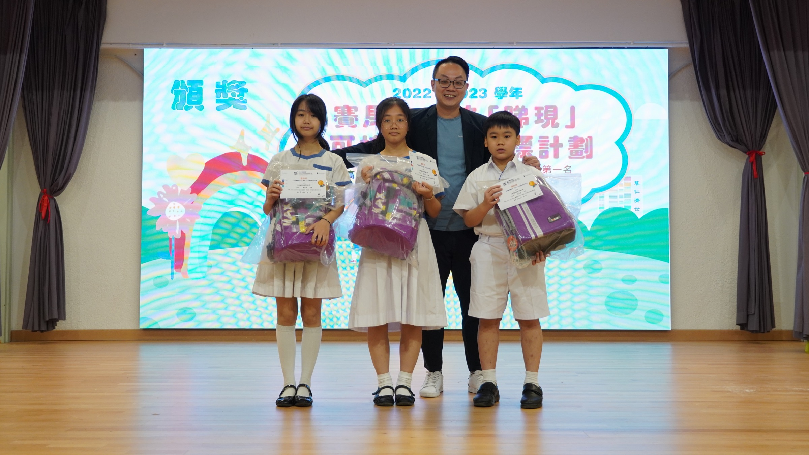
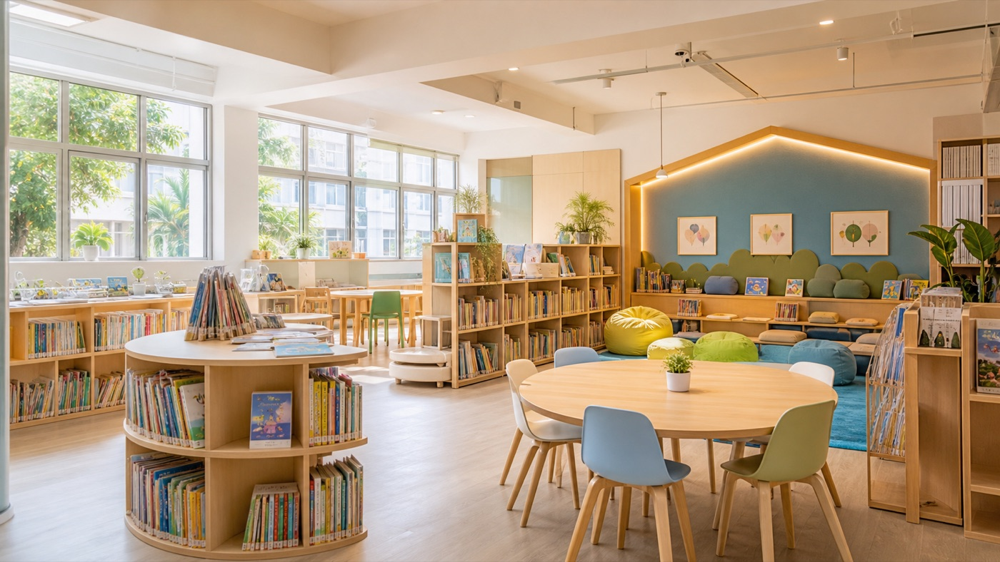
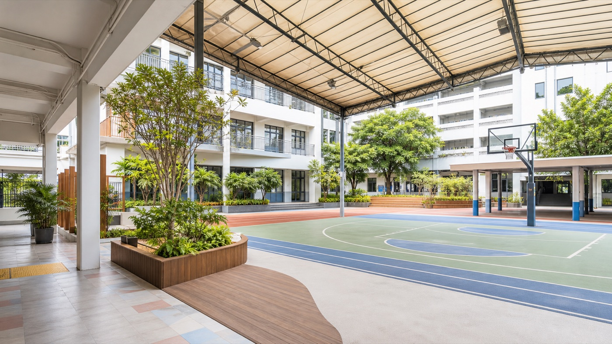

最新公告
2026-2027 年度小一入學資訊
歡迎家長了解本校辦學理念、課程特色及校園生活。入學安排及相關文件將按教育局公布時間更新。
查看入學資訊
關於趙小
學校重視學生品德、學業與身心發展，致力營造關愛、積極和有歸屬感的校園，讓每位孩子都能發揮潛能。
透過多元課程、活動體驗與家校合作，學生在學習中建立良好習慣、探索興趣，並逐步培養面向未來的能力。
最新消息
最新公告
歡迎家長了解本校辦學理念、課程特色及校園生活。入學安排及相關文件將按教育局公布時間更新。
查看入學資訊學校資訊
認識學校發展、校園設施及學生支援。
活動花絮
瀏覽學生參與活動、比賽及多元學習經歷。
招標
查看學校最新招標、採購及行政公告。
學與教
學校以學生需要為中心，透過課程規劃、語文學習、STEAM 探究及成長教育，培養主動學習的態度。
以學生需要為中心，清楚展示課程規劃、跨學科學習與評估方向。
中英文閱讀、表達與溝通能力成為家長最容易理解的學習亮點。
以探究、創作、解難與展示成果，呈現學校面向未來的教學特色。
把品德教育、社交情緒、領袖培訓與生涯啟蒙放在同一脈絡。
多元體驗
學生透過服務、體藝、戶外學習及校本活動，擴闊視野，建立自信與責任感。
校園環境
校園設有多元學習及活動空間，支援學生在閱讀、探究、體藝及群體生活中均衡發展。


Contact
如欲查詢學校資訊、入學安排或其他行政事宜，歡迎於辦公時間與學校聯絡。